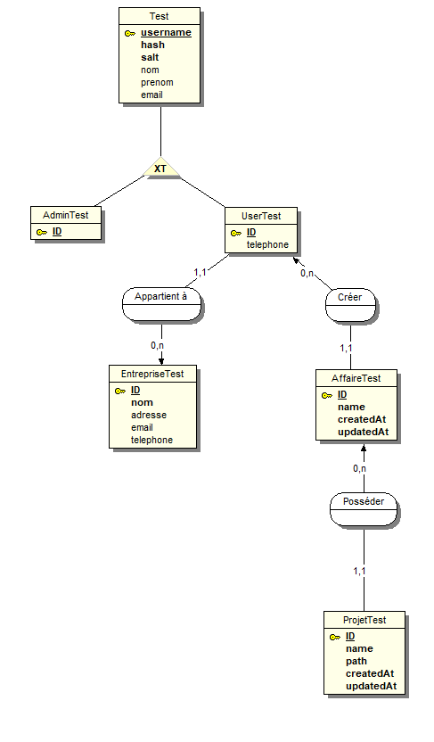

Attention:
Vous êtes en train de lire la documentation d'une API qui a été fonctionnelle, mais qui a depuis été mise hors-service.
Obtention d'un token:
Les requêtes nécessitent pour la plupart un token JWT.
Ces tokens doivent être placés dans le header "Authorization": "Bearer TOKEN"
Pour obtenir un token administrateur, faire une requête à /admins/login (voir documentation),
avec comme corps de requête: { "admin": { "adminname": "identifiant", "password": "motDePasse" } }
Identifiants pour obtenir token administrateur: Adminname "----------", Mot de passe "----------"
Pour obtenir un token utilisateur, faire une requête à /users/login (voir documentation),
avec comme corps de requête: { "user": { "username": "identifiant", "password": "motDePasse" } }
Identifiants pour obtenir token utilisateur: Username "----------", Mot de passe "----------"
Admins
https://epreuve.idea43.net/api/admins
Paramètres d'URL: {admin} doit être remplacé par l'id d'un administrateur.
Query: none.
Token nécessaire: Administrateur.
Renvoie les infos de l'administrateur dont l'id correspond à {admin}.
Query: none.
Token nécessaire: none.
Permets de login un administrateur en passant dans le corps de la requête le adminname et le password.
Renvoie l'administrateur connecté, avec un token.
Query: none.
Token nécessaire: none.
Permets de logout un administrateur.
Ne fait rien côté serveur, mais côté client il faut supprimer le token.
Renvoie un message de confirmation du logout.
Query: none.
Token nécessaire: Administrateur.
Permet de créer un nouvel administrateur.
Les champs adminname et password doivent être renseignés (obligatoire) dans le corps de la requête.
On peut aussi préciser: email, nom, prenom.
Exemple de corps de requête: { "admin": { "adminname": "newName", "password": "newPass", "email": "new@email.com" }}
Renvoie l'administrateur créé.
Query: none.
Token nécessaire: Administrateur.
Mets à jour les champs de l'administrateur dont l'id correspond à {admin}.
Champs à changer: adminname, email, password, nom, prenom.
Exemple de corps de requête: { "admin": { "email": "newEmailValue" } }
Renvoie l'administrateur modifié.
Query: none.
Token nécessaire: Administrateur.
Supprime l'administrateur dont l'id correspond à {admin}.
Renvoie un message de confirmation de suppression de l'administrateur.
Users
https://epreuve.idea43.net/api/users
Paramètres d'URL: {user} doit être remplacé par l'id d'un utilisateur.
Query: none.
Token nécessaire: Administrateur.
Renvoie la liste des utilisateurs.
Query: none.
Token nécessaire: Administrateur.
Renvoie les informations de l'utilisateur dont l'id correspond à {user}.
Cette requête est aussi possible avec un token utilisateur, sous la condition que le token appartienne à l'utilisateur dont on demande les informations.
Query: none.
Token nécessaire: Utilisateur.
Le Token doit être celui de l'utilisateur dont l'ID correspond à {user}.
Renvoie la liste des projets appartenant à l'utilisateur dont l'ID correspond à {user}.
Query: none.
Token nécessaire: none.
Permets de login un user en passant dans le corps de la requête le username et le password.
Renvoie l'user connecté, avec un token.
Query: none.
Token nécessaire: none.
Permets de logout un user.
Ne fait rien côté serveur, mais côté client il faut supprimer le token.
Renvoie un message de confirmation du logout.
Query: none.
Token nécessaire: Administrateur.
Permet de créer un nouveau user.
Les champs username, password et entreprise doivent être renseignés (obligatoires) dans le corps de la requête.
Le champ entreprise doit correspondre à un ID d'une entreprise existante!
Peuvent aussi être indiqués les champs: email, telephone, nom, prenom.
Exemple de corps de requête: { "user": { "username": "newName", "password": "newPass", "entreprise": "idEntreprise", "email": "new@email.com" }}
Renvoie l'user créé.
Query: none.
Token nécessaire: Administrateur.
Mets à jour les données de l'user dont l'id correspond à {user}.
Champs à changer: username, email, telephone, password, nom, prenom.
Exemple de corps de requête: { "user": { "telephone": "0123456789" }}
Renvoie les nouvelles données de l'user.
Query: none.
Token nécessaire: Administrateur.
Supprime l'user dont l'id correspond à {user}.
Renvoie un message de confirmation de suppression de l'user.
Entreprises
https://epreuve.idea43.net/api/entreprises
Paramètres d'URL: {entreprise} doit être remplacé par l'id d'une entreprise.
Query: none.
Token nécessaire: Administrateur.
Renvoie les informations de l'entreprise dont l'id correspond à {entreprise}.
Query: none.
Token nécessaire: Administrateur.
Renvoie une liste des entreprises.
Query: none.
Token nécessaire: Administrateur.
Renvoie la liste des affaires de l'entreprise dont l'id correspond à {entreprise}.
Query: none.
Token nécessaire: Administrateur.
Renvoie la liste des projets de l'entreprise dont l'id correspond à {entreprise}.
Query: none.
Token nécessaire: Administrateur.
Permets de créer une nouvelle entreprise.
Le champ nom de l'entreprise doit être renseigné (obligatoire pour la création).
On peut renseigner les champs: email, telephone, adresse.
Exemple de corps de requête: { "entreprise": { "nom": "companyName", "adresse": "7 rue de la fontaine" } }
Renvoie les informations de l'entreprise créée.
Query: none.
Token nécessaire: Administrateur.
Mets à jour les données de l'entreprise dont l'id correspond à {entreprise}.
Champs modifiables: nom, email, telephone, adresse.
Exemple de corps de requête: { "entreprise": { "nom": "newCompanyName" }}
Renvoie les nouvelles données de l'entreprise modifiée.
Query: none.
Token nécessaire: Administrateur.
Supprime l'entreprise dont l'id correspond à {entreprise}.
Renvoie un message de confirmation de la suppression de l'entreprise.
Affaires
https://epreuve.idea43.net/api/affaires
Paramètres d'URL: {affaire} doit être remplacé par l'id d'une affaire.
Query: none.
Token nécessaire: Utilisateur.
Renvoie les infos de l'affaire dont l'id correspond à {affaire}.
Attention, si l'utilisateur faisant la demande ne fait pas partie de l'entreprise à laquelle appartient l'affaire, alors l'api renverra une erreur 404 (pour cacher la possible existence de l'affaire).
Query: none.
Token nécessaire: Utilisateur.
Renvoie les projets de l'affaire dont l'id correspond à {affaire}.
Attention, si l'utilisateur faisant la demande ne fait pas partie de l'entreprise à laquelle appartient l'affaire, alors l'api renverra une erreur 404 (pour cacher la possible existence de l'affaire).
Query: none.
Token nécessaire: Utilisateur.
Permet de créer une nouvelle affaire.
Le champ name doit être renseigné (obligatoire) dans le corps de la requête.
Exemple de corps de requête: { "affaire": { "name": "nomAffaire" }}
Renvoie les informations de l'affaire créée'.
Query: none.
Token nécessaire: Utilisateur.
Mets à jour les champs de l'affaire dont l'id correspond à {affaire}.
Champs modifiables: name.
Exemple de corps de requête: { "affaire": { "name": "newNameValue" } }
Attention, si l'utilisateur faisant la demande ne fait pas partie de l'entreprise à laquelle appartient l'affaire, alors l'api renverra une erreur 404 (pour cacher la possible existence de l'affaire).
Si l'utilisateur faisant la demande n'est pas le créateur de l'affaire, l'api refusera le changement.
Query: none.
Token nécessaire: Utilisateur.
Supprime l'affaire dont l'id correspond à {affaire}.
Attention, si l'utilisateur faisant la demande ne fait pas partie de l'entreprise à laquelle appartient l'affaire, alors l'api renverra une erreur 404 (pour cacher la possible existence de l'affaire).
Aussi, si l'affaire contient des projets, l'api refusera de supprimer l'affaire.
Renvoie un message de confirmation de suppression de l'affaire.
Projets
https://epreuve.idea43.net/api/projets
Paramètres d'URL: {id} doit être remplacé par l'id d'un projet.
Query: none.
Token nécessaire: Utilisateur.
Renvoie une liste de projets appartenant à l'utilisateur auquel appartient le token.
Query: none.
Token nécessaire: Utilisateur.
Renvoie les informations sur le projet dont l'id correspond à {id}. L'utilisateur auquel appartient le token doit être propriétaire de ce projet.
{id} doit correspondre à l'id d'un projet.
Query: none.
Token nécessaire: Utilisateur.
Renvoie les informations sur le projet concerné avec une url pour télécharger le fichier du projet. L'utilisateur auquel appartient le token doit être propriétaire de ce projet.
L'url de téléchargement est valide pour 1 minute. C'est le lien "signedRequest".
{id} doit correspondre à l'id d'un projet.
Query: none.
Token nécessaire: Utilisateur.
Créé un projet avec les informations contenues dans le corps de la requête.
Champs obligatoires: affaireId, name.
Exemple de corps de requête: { "projet": { "affaireId": "id_de_une_Affaire", "name": "nomProjet" } }
Si le projet n'existe pas, il est créé. Il est automatique lié à l'entreprise de l'utilisateur.
Renvoie les données du projet créé, avec une URL valide pour 1 minute pour upload le fichier du projet sur AWS S3 (pour upload sur s3: requête PUT vers l'url indiquée (signedRequest), avec comme corps de requête le fichier en binary).
Query: none.
Token nécessaire: Utilisateur.
Modifie le projet dont l'id correspond à {id}.
Le user auquel appartient le token doit être le propriétaire du projet.
Champs modifiables: path.
Exemple de corps de requête: { "projet": { "path": "newPath" } }
Renvoie les informations modifiées du projet.
Query: none.
Token nécessaire: Utilisateur.
Supprime le projet dont l'id correspond à {id}.
L'utilisateur auquel appartient le token doit être le propriétaire du projet.
Renvoie un message de confirmation de suppression du projet.
Base de données
La base de données utilisée est DynamoDB.
C'est une base de donnée NON-RELATIONNELLE, donc il ne convient pas de faire un MCD pour la décrire.
Cependant, uniquement pour information, voici le MCD de la base de données si elle était relationnelle:

Remarque: "Test", "UserTest" et "AdminTest" sont en fait deux tables: Utilisateur et Administrateur, comme présenté sous ce 2ème MCD:
Ce deuxième MCD est plus fidèle à la réalité de la BDD, étant donné qu'elle n'est pas relationnelle.
Les tables de la BDD sont:

Accès à la base de données
Pour accèder à la base de donnée et voir les informations qui y sont;
Se rendre sur: CE LIEN.
Il faut se connecter en tant qu'utilisateur IAM.
Indiquer:
- ID de compte: ----------------
- Nom d'utilisateur: ----------------------------
- Mot de passe: ----------------------------------------
Vous aurez ensuite accès aux tables.
Pour consulter les données d'une table, cliquer sur le nom de la table.
Ensuite, cliquez sur le bouton orange en haut à droite de la page indiquant "Explorer les éléments de la table".